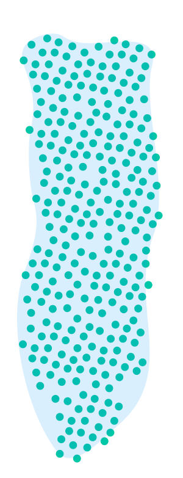
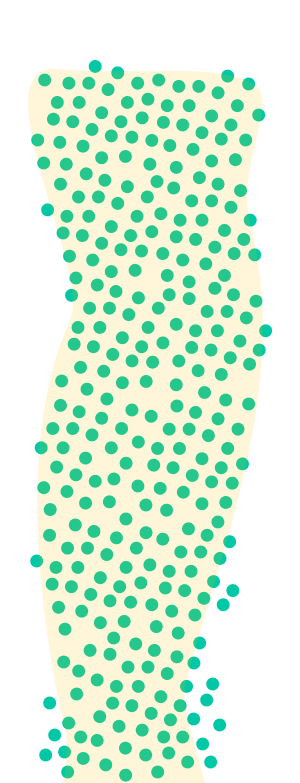

Greenhouse gases, most importantly Carbon dioxide (CO₂), Methane (CH₄), Laughing gas (N₂0) and F-Gases (PFC, NF3, SF6), are gases in the Earth's atmosphere that are responsible for global warming. To masure the climate impact, or more precisely the climate damage of these greenhouse gases, gases can be converted into CO₂ equivalents (CO₂eq).
CO₂
CH₄
N₂0
PFC, NF4, SF4
In order to make the effects of the various greenhouse gases on the climate comparable, the United Nations Intergovernmental Panel on Climate Change (IPCC) has defined the so-called Global Warming Potential (GWP). The GWP expresses the warming effect of a certain amount of the respective greenhouse gas over a defined period of time (100 years) compared to that of CO₂.
The climate impact of carbon dioxide serves as a benchmark, while the other greenhouse gases are related to each other according to their specific effectiveness in particles per million particles (part per million, ppm) of CO₂.
1 CO₂eq
28 CO₂eq
298 CO₂eq
12400-23500 CO₂eq


As already mentioned, the GWP expresses the warming effect of a certain amount of the respective greenhouse gas over a defined period of time (100 years) compared to that of CO₂. But apart from that, all gases are remaining in the atmosphere for different amounts of time, from months to millennia, and affect the climate on very different timescales.
in our atmosphere


Carbon dioxide is largely produced by the burning of fossil fuels such as coal, oil and gas, for example for power generation, in industry, domestic heating systems and in road traffic. In addition, as a result of deforestation, CO2 is released by the decomposition of biomass during the burning of mainly tropical forests. Lignite-fired power plants emit about 20 percent of the total German CO2 emissions.
Methane is always produced when organic material is decomposed in the absence of oxygen; this occurs mainly in the stomachs of ruminants (cows and sheep), in wet rice cultivation and in landfills. For example, a cow produces about 150 to 250 litres of methane.
Laughing gas is produced in the soil during the decomposition of mineral nitrogen fertilizers. It is the most important greenhouse gas released by agriculture worldwide. The use of land and fertilizers leads to a significant release of CO2 and nitrous oxide.
F-Gases are mainly used as propellants and refrigerants, their use has been greatly reduced since 1990 as they contribute to the destruction of the ozone layer; the fluorocarbons (HFCs) used as substitutes do not damage the ozone layer - but they are also greenhouse gases.